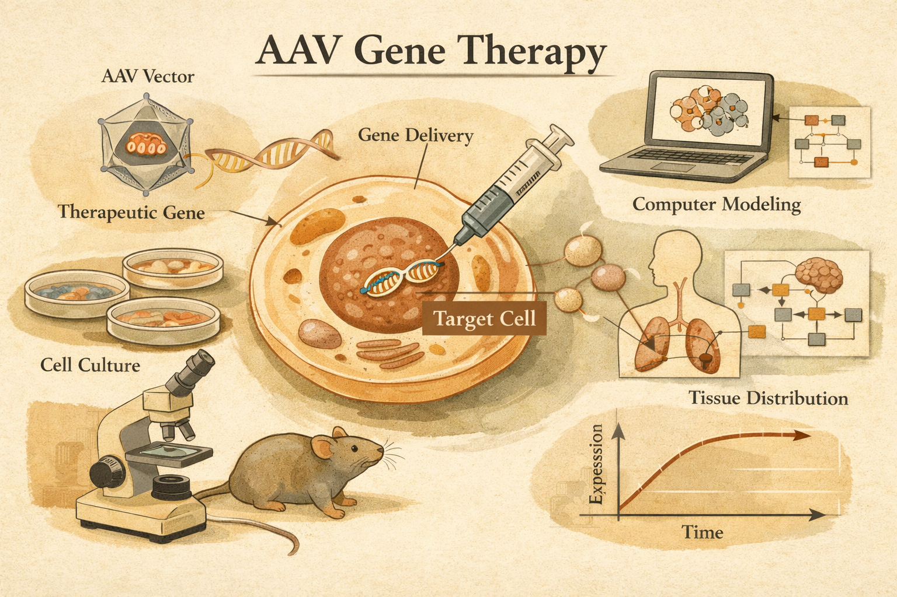

Adeno-Associated Virus (AAV) as a Vector for Gene Therapy
AAV has emerged as one of the most promising delivery platforms for gene therapy because it can carry therapeutic DNA into human cells with relatively low safety concerns, while remaining constrained by immunity and manufacturing hurdles.

Gene therapy aims to treat disease by delivering or replacing genetic material inside cells. For decades, the main bottleneck was not only identifying the relevant gene, but also finding a safe and efficient delivery system. Adeno-associated virus (AAV) has become one of the most studied vectors because it can be engineered to carry therapeutic DNA without retaining viral genes.
What they did
The review synthesizes current knowledge on AAV biology, immunology, manufacturing, and delivery strategies. It explains how the virus enters cells, how the immune system responds to the capsid and the transgene, and how production and purification workflows are being scaled for clinical use.
Key finding
AAV is a versatile vector that has shown strong preclinical and clinical relevance, especially for local delivery and monogenic disorders. Its main advantages are a favorable safety profile and broad applicability, while the principal challenges are pre-existing immunity, capsid-related responses, and manufacturing complexity.
Why it matters
The review helps explain why AAV has become central to gene therapy development. It provides a practical framework for understanding both the promise and the constraints of the platform, which is essential for researchers designing safer and more effective therapies.
Pre-existing neutralizing antibodies and T-cell responses can reduce efficacy or eliminate transduced cells. Manufacturing is still expensive and technically demanding, and purification must reliably separate full capsids from empty ones.
AAV is not a universal solution, but it remains one of the best-established delivery systems for gene therapy. Its future impact will depend on overcoming immune barriers and improving scalable manufacturing.
“The ability to generate recombinant AAV particles lacking any viral genes and containing DNA sequences of interest has thus far proven to be one of the safest strategies for gene therapies.”
Adeno-Associated Virus (AAV) as a Vector for Gene Therapy
Authors: Michael F. Naso, Brian Tomkowicz, William L. Perry III, William R. Strohl
Journal: BioDrugs